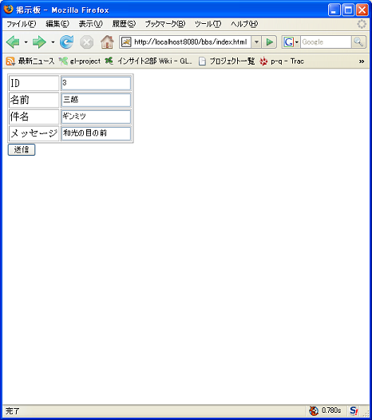
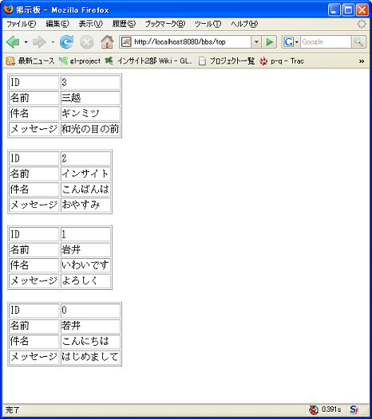

〜掲示板への道〜
4.サーブレット＋JDBC編
サーバサイドに戻り、サーブレット上で、データベースのアクセスを試みます。
JDBCドライバを配置する
3.JDBCでデータベース"MySQL"アプリケーション編 で学んだように
Javaアプリケーションからデータベースにアクセスするためには、JDBCドライバが必要です。
3.JDBCでデータベース"MySQL"アプリケーション編 ではJDBCドライバ
を使用するために環境変数 CLASSPATH を設定することで、クラスパスにJDBCドライバを追加しました。
忘れている人はここを見て思い出してください。
これはWEBアプリケーションでも同様です。
ただし、WEBアプリケーションではクラスパスを設定するのに、環境変数を使用しません。
かわりに、WEB-INF/lib の下に mysql-connector-java-5.1.36-bin.jar をおくことで、自動的にクラスパスに追加されます。
WebアプリケーションからDBにアクセスする
パラメータを受信するサーブレット編の
各ファイルを以下のように改変します。
%CATALINA_HOME%\webapps\bbs\index.html
<html>
<head>
<meta http-equiv="Content-Type" content="text/html; charset=Shift_JIS">
<title>掲示板</title>
</head>
<body>
<form action="./top" method="POST">
<table border="1">
<tr>
<td>ID</td>
<td><input type="text" name="id"></td>
</tr>
<tr>
<td>名前</td>
<td><input type="text" name="name"></td>
</tr>
<tr>
<td>件名</td>
<td><input type="text" name="subject"></td>
</tr>
<tr>
<td>メッセージ</td>
<td><input type="text" name="content"></td>
</tr>
</table>
<input type="submit" name="sendMessage" value="送信">
</form>
</body>
</html>
改変点は、
- 「趣味」の入力欄を廃止して、「ID」「件名」「メッセージ」入力欄を追加しました。
%CATALINA_HOME%\webapps\bbs\jp\co\insightech\BBSServlet.java
package jp.co.insightech;
import java.io.*;
import javax.servlet.*;
import javax.servlet.http.*;
import java.sql.*;
import java.util.Vector;
public class BBSServlet extends HttpServlet {
public void doGet(HttpServletRequest request, HttpServletResponse response)
throws ServletException, IOException {
try {
MessageDao dao = new MessageDao();
// (1) データベースに1件分レコードを挿入します
String id = request.getParameter("id");
String name = request.getParameter("name");
String subject = request.getParameter("subject");
String content = request.getParameter("content");
Message message = new Message();
message.setId(Integer.parseInt(id));
message.setName(name);
message.setSubject(subject);
message.setContent(content);
dao.registerMessage(message);
// (2) データベースにあるデータを全件取得します
Vector messageList = dao.getMessageList();
// 投稿メッセージの一覧を表示します
show(messageList, response);
} catch (Exception e) {
e.printStackTrace();
}
}
public void doPost(HttpServletRequest request, HttpServletResponse response)
throws ServletException, IOException {
doGet(request, response);
}
/**
* 投稿メッセージの一覧を表示します.
*
* @param messageList 投稿メッセージの一覧
* @param response HttpServletResponse
*/
private void show(Vector messageList, HttpServletResponse response) throws IOException {
response.setContentType("text/html; charset=MS932");
PrintWriter out = response.getWriter();
out.println("<html><head><title>掲示板</title></head>");
out.println("<body>");
for (int i = 0; i < messageList.size(); i++) {
Message message = (Message) messageList.get(i);
out.println("<table border=1>");
out.println("<tr><td>ID</td><td>" + message.getId() + "</td></tr>");
out.println("<tr><td>名前</td><td>" + message.getName() + "</td></tr>");
out.println("<tr><td>件名</td><td>" + message.getSubject() + "</td></tr>");
out.println("<tr><td>メッセージ</td><td>" + message.getContent() + "</td></tr>");
out.println("</table><br>");
}
out.println("</body></html>");
out.close();
}
}
改変点は、
- (1)の部分と InsertTest との違いは、データの取得元が、コンソールの引数か、リクエストのパラメータかの違いだけです。
- (2)の部分と SelectTest との違いは、show メソッドが、コンソール用のものから、WEB用のものへと変わっただけです。
Message クラスおよび、MessageDao クラスは前に作ったものをそのまま利用できます。
早くもクラスを分けた恩恵に与ってしまいました。
さあファイル数も増えて来ました。
この時点で、次のような構成になっていることを確認してください。
C:\tomcat\webapps\bbs>tree /F
フォルダ パスの一覧
ボリューム シリアル番号は 0000E99F 6377:4DBE です
C:.
│ index.html
│
└─WEB-INF
│ web.xml
│
├─classes
│ └─jp
│ └─co
│ └─insightech
│ BBSServlet.class
│ BBSServlet.java
│ CharacterEncodingFilter.class
│ CharacterEncodingFilter.java
│ InsertTest.class
│ InsertTest.java
│ Message.class
│ Message.java
│ MessageDao.class
│ MessageDao.java
│ SelectTest.class
│ SelectTest.java
│
└─lib
mysql-connector-java-5.1.36-bin.jar
WEB-INF/lib ディレクトリの下に、ドライバを置くことを忘れずに！
実行する
TOMCAT を起動後、実行してみます。
まずは http://localhost:8080/bbs/index.html の画面で、
以下のように入力し、ボタンを押下します。
まだ、文字未入力チェックはしていません。
また、ID番号もすでにある番号を指定するとエラーが発生します。
注意してください。

すると画面が遷移され、今入力した内容も含めて全件表示されます。

掲示板らしくなってきました。ここからこの掲示板を改良していきます。
©日本インサイトテクノロジー株式会社
WEB-INF/lib に置かずとも、クラスパスは通ってしまうかもしれません。
しかし、WEBアプリケーションで使用する jar ファイルは、上記で説明したように、
WEB-INF/lib に置き、環境変数には、設定しないようにします。
環境変数に設定してしまうと、全部の Java アプリケーションのクラスパスに追加されてしまうので不便な
場合があるからです。
Tomcat8 は起動スクリプトの中で環境変数の CLASSPATH を使わないようにしているので WEB-INF/lib に置かない限りクラスパスは通りません。